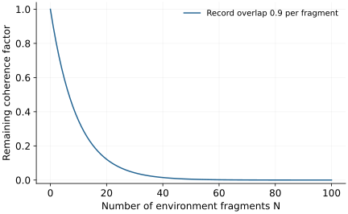

Research question
How does a classical world emerge?
Loss of local interference is only part of the story: stable, independently accessible records must also be explained.
A worked entry into an open research direction · Sources checked 20 October 2026
The question in perspective
A dust grain has quantum constituents, yet observers can agree on its position by intercepting different scattered photons. The research question is how interactions produce stable records accessible to many observers, and under what conditions a classical approximation becomes reliable.
This question differs from selecting one measurement outcome. Even after adopting an interpretation, one must explain which variables are robust, where their records reside, and how accurately classical trajectories predict observations.
Interference and records
In a simple recording model, \(N\) environment fragments interact independently with a two-state system. Starting from equal amplitudes, let the final state be
\[\ket\Psi=\frac{\ket0\bigotimes_{k=1}^N\ket{e_0^{(k)}}+\ket1\bigotimes_{k=1}^N\ket{e_1^{(k)}}}{\sqrt2}.\]
If every fragment overlap is the same real number \(r\in[0,1]\), tracing out all fragments gives
\[\rho_S=\frac12\begin{pmatrix}1&r^N\\r^N&1\end{pmatrix}.\]
The eigenvalues are \((1\pm r^N)/2\), so their entropy is \(S(\rho_S)=h_2((1+r^N)/2)\). Here \(S(\rho)=-\operatorname{tr}(\rho\log_2\rho)\) and \(h_2(p)=-p\log_2p-(1-p)\log_2(1-p)\). Weak records can collectively suppress coherence: for \(r=0.9,N=100\), the surviving overlap is about \(2.66\times10^{-5}\).
Now suppose records are perfect, \(r=0\). Any nonempty proper subset \(F\) of fragments contains a complete classical label. With \(I(S:F)=S(S)+S(F)-S(SF)\), the three entropies are each one bit and hence \(I(S:F)=1\). For the entire environment, the total state is pure and \(I(S:E)=2\). Many disjoint fragments can therefore carry the same classical record; they do not carry independent copies of an arbitrary unknown quantum state.

What is established
Decoherence theory supplies dynamical mechanisms for loss of accessible interference. Quantum Darwinism investigates redundant environmental records. Mixed-environment models show how initial environmental entropy changes the ability to store those records.
The model above is an exact calculation under independent recording interactions. It does not show that every environment creates redundant records. Entropy growth alone is insufficient evidence that several observers can independently retrieve the same variable.
What remains unresolved
Real environments mix their own degrees of freedom and may hide information in correlations that are difficult to access locally. The useful questions concern which interactions create robust records, how scrambling destroys local accessibility, and how to distinguish readable classical information from total mutual information.
A concrete next investigation
Reproduce: calculate \(I(S:F)\) as a function of fragment size in the independent model. Diagonalize reduced matrices rather than treating the small overlap as an exact zero.
Check: recover one bit for every nonempty proper fragment in the perfect-record case and two bits for the complete environment. These are distinct access regimes.
Extend: add interactions between environmental fragments and compare mutual information with the information extractable by specified local measurements. A useful result identifies when redundancy survives, with an operational readout and an error tolerance.
Selected references
- Quantum Decoherence
Maximilian Schlosshauer. 2019. Review
Models, experiments, and the limits of decoherence as a foundational explanation.
- Quantum Darwinism
Wojciech H. Zurek. 2009. Research paper
Redundant environmental records and the emergence of classical accessibility.
- Quantum Darwinism in a hazy environment
Michael Zwolak, H. T. Quan, Wojciech H. Zurek. 2009. Research paper
The effect of initial environmental entropy on record storage.
Years refer to first arXiv submission. Publication details are available in the linked records.